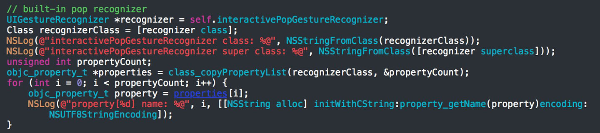
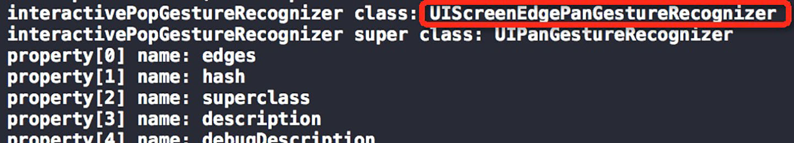
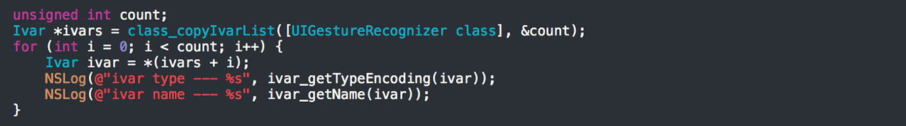
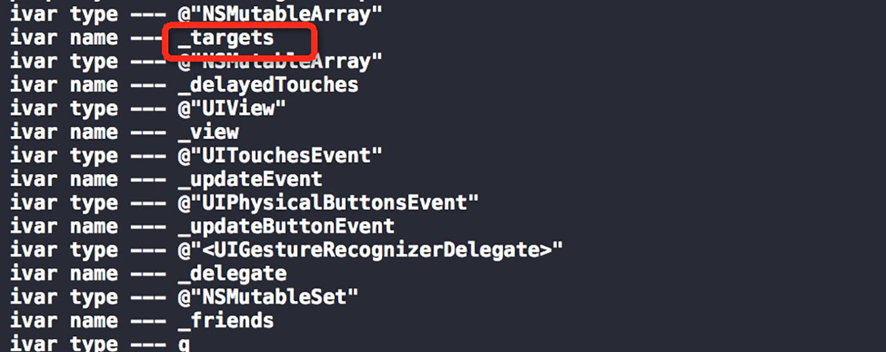
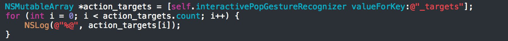
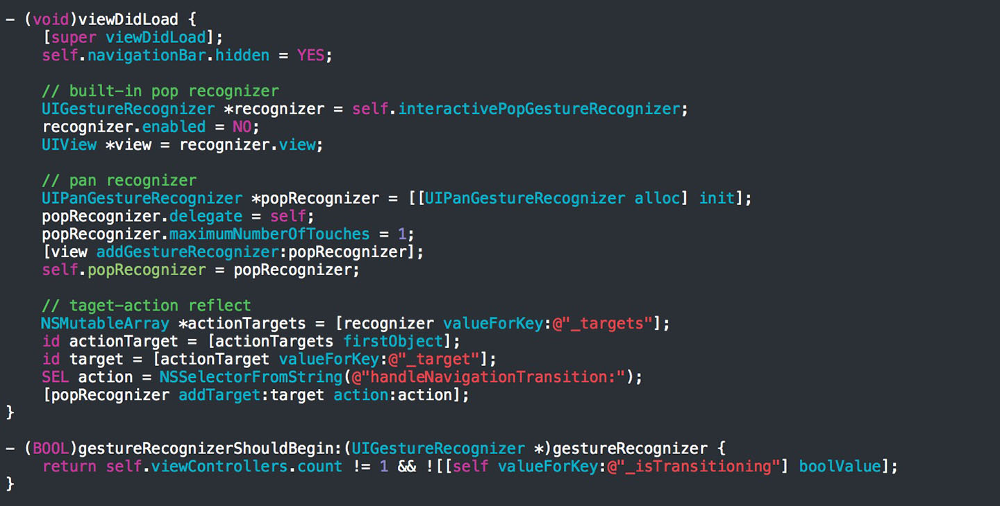

iOS7之前, 为了自定义控制器转场动画, 往往会通过自定义容器并实现分类方法transitionFromViewController:
toViewController: duration: options: animations: completion:的方式实现一些UIView动画. 而iOS7则提供了一些全新的API
, 主要是UIViewControllerContextTransitioning, UIViewControllerAnimatedTransitioning和UIViewControllerInteract
iveTransitioning(如有手势操作需实现该协议)三个协议, 其中第一个协议一般不需要我们实现; 第二个协议的方法会为我们提供切换(即
转场)上下文, 并需要我们提供切换需要的时间以及切换时控制器view的自定义设置和动画; 系统已有一个实现了第三个协议的UIPercentDr
ivenInteractiveTransition类, 在交互过程中只要告诉该类的对象当前交互状态占整个交互进度的百分比, 系统会根据此百分比和我们自
定义的迁移方式计算出具体的渲染情况. 另外, 如果要实现导航控制器的自定义切换, 还需要我们实现UINavigationControllerDelegate
协议. 上述接口的详细解读请参见oneV大神的文章:WWDC 2013 Session笔记 - iOS7中的ViewController切换. 是的, 看上去灵活无比
, 实际上也确能实现许多酷炫的自定义转场效果. 我们知道, iOS7的导航控制器有一个自带的pop手势(interactivePopGestureRecogniz
er), 该手势允许我们从屏幕左侧向右滑动来pop掉当前的栈顶控制器. 事实上, 我们看到国内许多app就是采用了系统自带的这个recogniz
er, 并没有定制切换效果. 而也有很多app(如最新版的网易新闻)在维持系统pop效果的前提下, 把手势响应区域扩展到全屏! 个人觉得后一
种用户体验更好, 也尝试用前面说的API实现了这种效果, 但经过空余时间搞了搞后发现, 这种效果其实有个更简单的实现方法 - -
为什么navigationController的pop手势只能响应左侧边缘呢, 我们看看这个手势isa("is a") what (测试时记得
加上头文件):


原来它是一个UIScreenEdgePanGestureRecognizer(没用过), 这个手势类继承自UIPanGestureRecognizer且只
有一个属性edges, 顾名思义, 它是一个"屏幕边界滑动手势", 经过简单测试发现它确实只能接收来自四个边缘的滑动手势.
于是大胆猜测, 保持所响应的view不变的前提下, 把这个边缘手势改成普通的响应整个view的pan手势, 并将其target-action值反射过去, 或
许就能实现效果. 首先, 遍历所有实例变量, 看看gestureRecognizer中的target-action如何存储:


以数组形式存储, key是@"_targets". 然后通过cocoa大招之一 --- KVC, 拿到系统侧滑手势对应的target-action数组, 并打印里面的元素:


数组中只有一个target-action元素, 日志中分别打印了他们的名字. 剩下的工作就是屏蔽系统手势, 为我们的pan手势添加这个target-ac
tion了, 经过测试, 完全可用. 下面是全部代码: